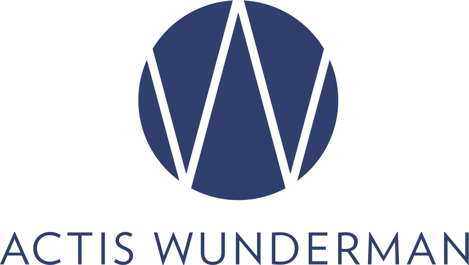
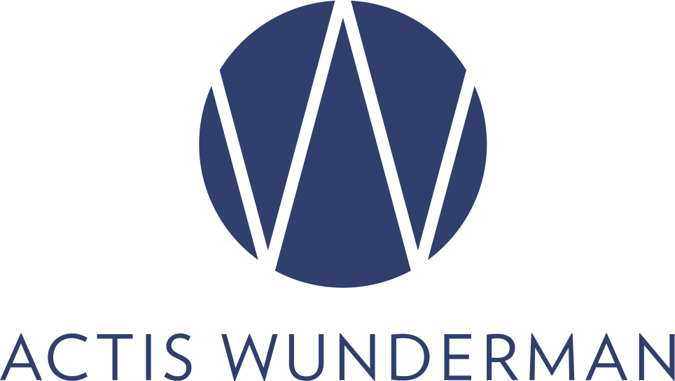

Actis Wunderman


Actis Wunderman— лидер в области digital-маркетинга на российском рынке.
История компании началась в 1997 году с появления дизайн-студии Actis Systems. В 2008 году студия стала частью глобальной сети Wunderman, входящей в рекламно-коммуникационный холдинг WPP.
Actis Wunderman работает с 13 из 50 самых ценных мировых брендов. В числе наших клиентов — Microsoft, MasterCard, L’Oréal Paris, Citi, BMW, Ford и другие крупнейшие компании. Агентство из года в год занимает лидирующие позиции в ключевых отраслевых рейтингах. На счету компании – более 1700 реализованных проектов для крупнейших российских и международных клиентов и более 50 наград престижнейших российских и международных фестивалей.
Москва, м. Курская, Нижний Сусальный пер., д. 5, стр. 19, +7 (495) 252-0588, info@actis.ru


IBS
IBS – крупный российский разработчик сложных ИТ-решений. Основана в 1992 году. Компания трансформирует технологические знания своей команды и понимание трендов ИТ-индустрии в новые идеи, помогающие клиентам повышать конкурентоспособность и достигать более высоких результатов. Технологии, разработанные в IBS, обеспечивают деятельность крупнейших компаний, интернет-сервисов, государственных организаций и благодаря этому меняют к лучшему жизнь миллионов людей.
адрес: IBS (м. Дмитровская, Складочная ул., д.3)


Deloitte
Deloitte— международная сеть компаний, оказывающих услуги в области консалтинга и аудита. «Делойт» входит в «большую четвёрку» аудиторских компаний и является самой крупной профессиональной сетью по количеству сотрудников (255 000 человек). В 2015 году журнал Fortune включил Deloitte в рейтинг 100 самых выдающихся компаний мира.
адрес: Deloitte, Белорусская (ул. Лесная, 5Б)


Крок
«КРОК» — российский системный интегратор, оказывающий услуги по ИТ-консалтингу, построению и аутсорсингу ЦОД, созданию облачных инфраструктур, организации call-центров и сетей передачи данных, управлению инженерной и ИТ-инфраструктурами и процессами (ITSM), обеспечению информационной и физической безопасности предприятия. В компании трудятся более 2300 человек, технические специалисты имеют свыше 4400 профессиональных сертификатов.
адрес: Крок, Площадь Ильича (Волочаевская, 5к1)


Финам
«ФИНАМ» — инвестиционная компания, на базе которой сформирован одноименный инвестиционный холдинг, основана в 1994 году – она в числе первых в России начала оказывать услуги, связанные с работой на фондовом рынке. В настоящий момент «ФИНАМ» предлагает юридическим и физическим лицам по всему миру одну из наиболее широких линеек инвестиционных услуг – от предоставления возможности вкладывать средства и доверительного управления активами на всех ключевых биржевых площадках до комплексного сопровождения сделок по покупке и продаже бизнеса и операций с капиталом (IPO, частное размещение акций и т.д.) и полного спектра банковских услуг. Холдинг проводит активную политику в области прямых инвестиций, вкладывая средства в приобретение высокотехнологичных проектов. В его составе был сформирован первый в России паевой инвестиционный фонд по вложению средств в High Tech «Финам – Информационные технологии».
адрес: ФИНАМ (м. Пушкинская, Настасьинский пер., д.7, стр.2)